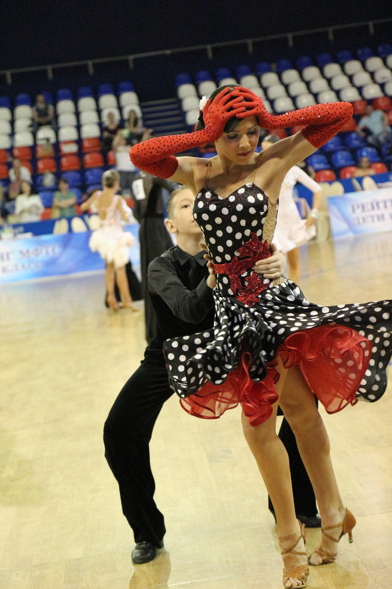

Математическое моделирование в разработке лекарств от компании "M&S Decisions"
PhystechDataScience
Принимаю участие в соревнованиях по танцам:
Ежегодный фестиваль "Московская студенческая весна"
Фестиваль искусств на физтехе
Даже немного преподаю танцы

Рассказываю о науке детям:
Была куратором у школьников на конференции "Старт в науку"
Вожатила на смене "Старт в инновации"
Преподавала детям химию в рамках проекта "Математическая вертикаль",
можно посмотреть видосик по ссылочке: мк по химии